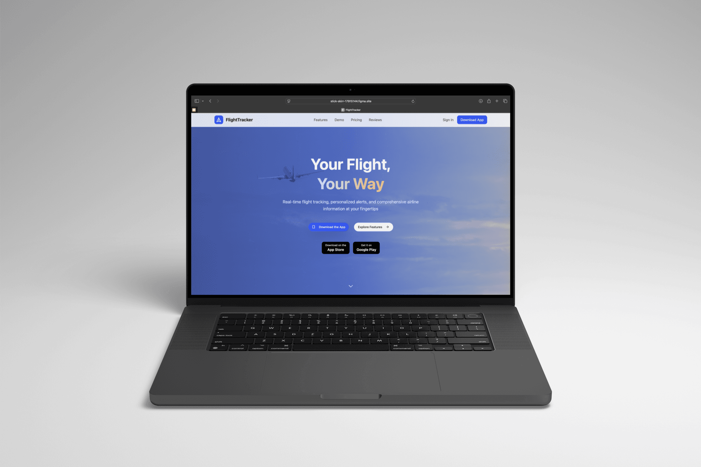
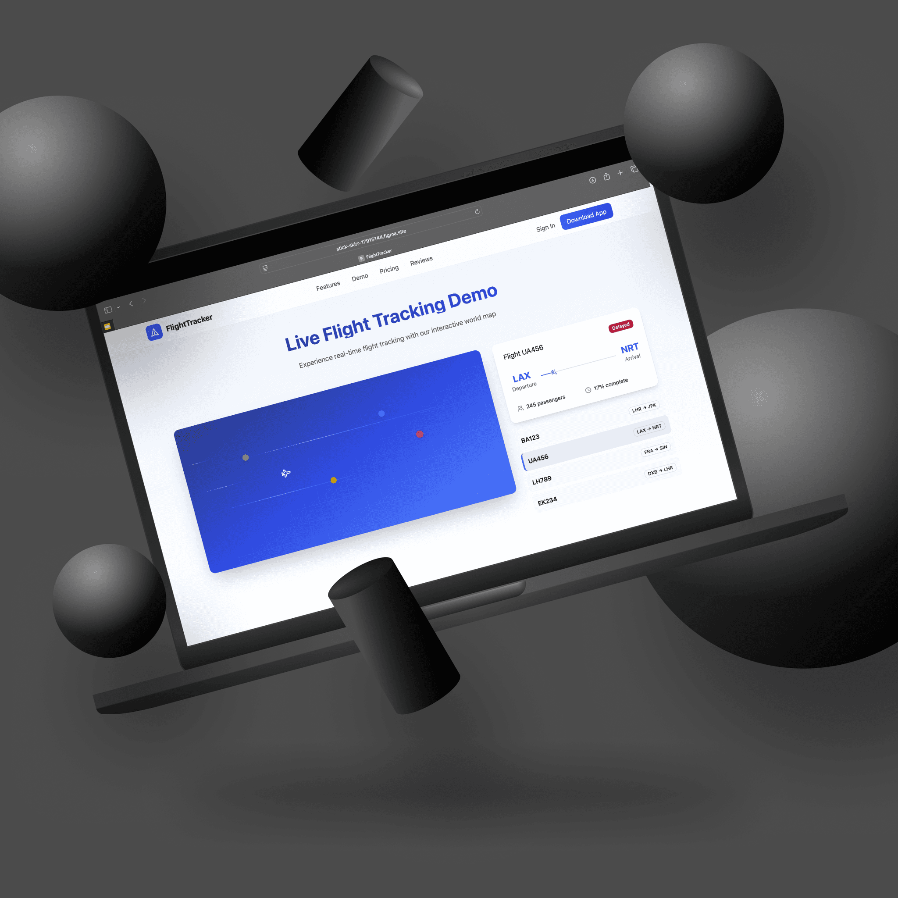

Click the button above to view the full website ⬆
This project was a take-home design task for an interview a few months ago which I was given permission to share. The challenge was to create a visually engaging, interactive one-page landing page for an airline information application that effectively showcased the app’s core features, built user trust, and drove app downloads. A key requirement was to build the entire design directly within Figma using AI-powered design tools—without relying too much on traditional Figma designing. This case study details my end-to-end process from research to delivering a fully AI-assisted, interactive prototype.

Problem Statement
Travellers often struggle with fragmented sources for flight updates, real-time tracking, and comprehensive airline information. The challenge was to design a landing page that clearly communicates the app’s benefits, engages users with interactive elements, and encourages app downloads without overwhelming them.
Goals
- Design a clean, attractive landing page aligned with air travel themes.
- Highlight core features through meaningful animations and interactions.
- Guide users seamlessly from discovery to conversion (download and sign-up).
- Build a responsive UI delivering smooth micro-interactions and optimized for multiple devices.
- Deliver the final product fully designed and built in Figma using AI-powered automation and native prototyping.
Research & Insights
- User pain points: Reliance on multiple platforms for flight info, late alerts, lack of centralized access.
- Competitor analysis: Studied airline apps and flight trackers for UI patterns, animation best practices, and onboarding flows.
- Design inspiration: Sky and flight visuals evoking trust, calm, and excitement. Subtle animation and motion to enhance engagement.
Design Process
Ideation & Wireframing
- Created initial layout sketches focusing on a single-page scroll experience with hero, features, demo, testimonials, and CTA sections.
- Prioritized bold above-the-fold messaging with clear CTAs for immediate engagement.
- Planned an interactive flight tracker demo as a core visual experience.
AI-Driven Design Execution in Figma
The company specified that the landing page must be built entirely within Figma without using traditional external tools. Through Figma Make’s AI-powered capabilities and plugins, I:
- Generated polished layouts, iconography, and illustrations in Figma efficiently without manual drawing or external editing tools.
- Utilized AI automation for style token management, component creation, and responsive layout adjustments.
- Built and prototyped complex animations, hover effects, and micro-interactions natively within Figma.
- Iterated rapidly with feedback cycles using Figma’s collaboration features.
This approach accelerated the design process and demonstrated how AI-assisted workflows can elevate quality and consistency in UI/UX design.
Visual & Interaction Design
- Chose a clean sky-inspired color palette with blues and warm accent gradients to convey reliability and energy.
- Used rounded sans-serif typography for readability and a friendly tone.
- Combined immersive hero video backgrounds with lightweight, animated icons and illustrations for focus and performance.
- Developed scroll-triggered animations (fade-ins, slide-ins), micro-interactions (rippling buttons, bouncing pins), and parallax effects for depth and engagement.
Prototype & Testing
- Delivered a fully interactive prototype showcasing key animations, hover states, and responsive behavior across desktop and mobile.
- Conducted informal usability testing sessions with peers, optimizing animation timing and ensuring clarity.
- Ensured accessibility with good contrast, distinct focus styles, and appropriately sized interactive touch areas.
Outcome & Learnings
- Successfully delivered a visually rich, interactive landing page prototype meeting all client requirements.
- Gained firsthand experience working entirely within an AI-driven design environment, pushing workflow efficiency and design innovation.
- Learned to balance rich motion design with clarity and performance considerations.
- Enhanced skills in micro-interactions, responsive layouts, and aviation-themed visual storytelling.